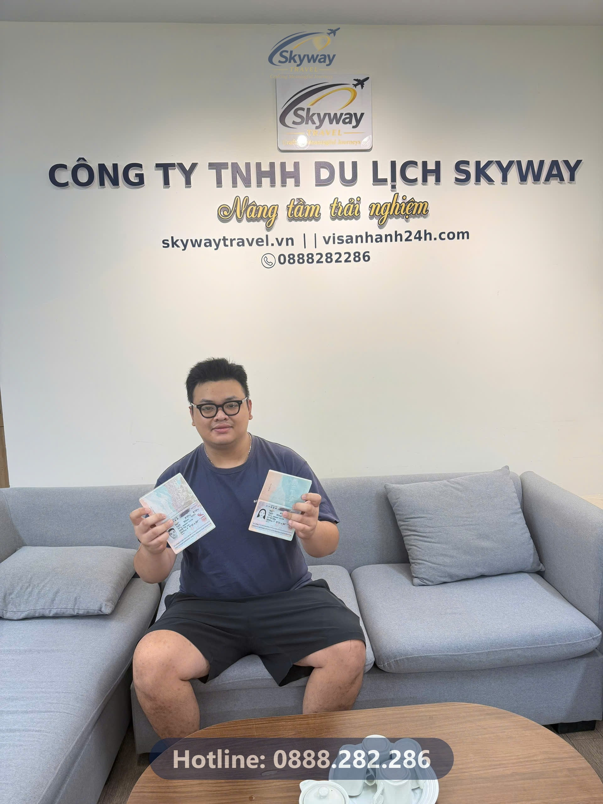

Cần nhớ: Hồ sơ visa Nhật Bản gấp cần được rà soát ngay điểm yếu về tài chính hoặc công việc, xử lý đồng bộ cùng lịch khởi hành của tour để đảm bảo kịp giờ bay.
Hình ảnh nam khách hàng cầm trên tay cuốn hộ chiếu với con dấu visa Nhật Bản gọn gàng ngay tại văn phòng Công ty TNHH Du lịch Skyway (Số 4, phố Phạm Tuấn Tài, Cầu Giấy, Hà Nội) là khoảnh khắc thở phào sau những ngày căng thẳng. Cận kề ngày khởi hành cùng đoàn, việc hồ sơ chưa có kết quả hoặc vướng mắc phát sinh luôn tạo ra áp lực rất lớn cho người đi. Vé máy bay đã xuất, khách sạn đã chốt, dịch vụ tại điểm đến đã sẵn sàng — chỉ một điểm nghẽn nhỏ ở giấy tờ xuất nhập cảnh cũng có thể làm đổ bể toàn bộ kế hoạch chuẩn bị hàng tháng trời.
Trong thực tế tiếp nhận hồ sơ tại Visa Nhanh 24h, đội ngũ phụ trách từng xử lý không ít trường hợp khách hàng tìm đến khi thời gian chuẩn bị chỉ còn tính bằng ngày. Áp lực lúc này không chỉ nằm ở việc hoàn thiện thủ tục theo đúng yêu cầu khắt khe của cơ quan lãnh sự, mà còn phải phối hợp nhịp nhàng với lịch trình khởi hành chung của cả đoàn để không một ai bị bỏ lại phía sau. Sự can thiệp kịp thời của các chuyên viên giàu kinh nghiệm chính là yếu tố quyết định giúp gỡ rối những nút thắt thời gian này.
Nhiều người thường chủ quan nghĩ rằng xin visa du lịch Nhật Bản chỉ là thủ tục đơn giản và có thể tự làm trước ngày đi vài tuần. Tuy nhiên, thời gian xét duyệt thực tế tại cơ quan ngoại giao thường dao động tùy thuộc vào lượng hồ sơ cao điểm trong năm, chưa kể những tình huống phát sinh cần giải trình thêm. Sai lầm phổ biến nhất là khách hàng tự chuẩn bị hồ sơ nhưng thiếu sót các giấy tờ chứng minh công việc hoặc tài chính khớp với thực tế.
Khi cơ quan tiếp nhận yêu cầu bổ sung giấy tờ mà thời gian đã cận kề, nhịp xử lý bị gián đoạn nghiêm trọng. Hậu quả là vé máy bay quốc tế và các dịch vụ đặt trước theo tour có nguy cơ phải hủy bỏ hoặc chịu phí phạt cao. Việc đối mặt với tình trạng nước đến chân mới nhảy không chỉ gây tổn thất tài chính mà còn ảnh hưởng trực tiếp đến tâm lý chuẩn bị cho chuyến đi dài ngày.
Khi thời gian gấp rút, việc xử lý hồ sơ không thể làm theo lối mòn mà cần một quy trình chuẩn xác để tối ưu từng giờ. Tại Visa Nhanh 24h, đội ngũ 6–8 nhân sự chuyên trách trực tiếp vận hành theo quy trình bảy bước rõ ràng, bắt đầu từ việc rà soát sơ bộ toàn bộ giấy tờ khách hàng đang có để ngay lập tức nhận diện điểm yếu. Thay vì để khách hàng tự xoay xở, chúng tôi hỗ trợ xây dựng lại phần chứng minh tài chính và lịch trình sao cho logic, thuyết phục nhất.
Các hạng mục dịch thuật, công chứng giấy tờ tư nhân hay pháp lý đều được đẩy nhanh tiến độ với độ chính xác cao. Sau khi hoàn thiện tờ khai đúng chuẩn yêu cầu của cơ quan cấp visa, việc đặt lịch hẹn hoặc hướng dẫn nộp hồ sơ được triển khai liền mạch. Mỗi bước đi đều có sự theo dõi sát sao từ đội ngũ chuyên trách nhằm đảm bảo tiến độ trả kết quả khớp hoàn hảo với ngày khởi hành của đoàn.
Khi thời gian chuẩn bị hồ sơ bị thu hẹp chỉ còn vài ngày trước hạn chót nộp vào cơ quan lãnh sự, việc chạy đua mở sổ tiết kiệm kỳ hạn dài là bất khả thi. Thay vào đó, bộ phận xử lý hồ sơ cần tận dụng ngay những nguồn tài chính sẵn có của khách hàng như số dư tài khoản thanh toán hiện tại, giấy tờ sở hữu bất động sản hoặc xe hơi để tạo cơ sở thuyết phục.
Đối với người làm nghề tự do, freelancer hoặc chủ hộ kinh doanh không có bảng lương hàng tháng, điểm mấu chốt không phải là làm giả giấy tờ cho đẹp mà là giải trình dòng tiền thực tế. Một bản sao kê tài khoản cá nhân thể hiện giao dịch đều đặn trong nhiều tháng, kết hợp giấy phép kinh doanh hoặc giấy xác nhận nộp thuế, sẽ tạo độ tin cậy cao hơn nhiều so với một tờ giấy xác nhận thu nhập khống.
Lãnh sự quán luôn kiểm tra tính logic giữa công việc khai báo và số dư tài khoản. Nếu một hồ sơ ghi làm nhân viên văn phòng nhưng tài khoản nhận tiền ra vào hàng trăm triệu đồng không rõ nguồn gốc mà không có giải trình hợp lý, rủi ro bị yêu cầu giải trình thêm là rất cao. Do đó, việc rà soát nhanh các chứng từ sẵn có và đính kèm thư giải trình ngắn gọn là cách xử lý thực tế nhất cho các ca gấp, giúp hồ sơ qua cửa xét duyệt suôn sẻ. Bạn có thể tham khảo thêm các thủ tục chi tiết tại danh mục cẩm nang visa châu Á của chúng tôi.
Một trong những rủi ro lớn nhất khi khách hàng tự túc đặt tour du lịch nước ngoài là sự lệch pha giữa thời gian cấp visa của đại sứ quán và lịch khởi hành của đoàn. Đã có không ít trường hợp khách tự làm visa, lịch hẹn bị đẩy ra sát ngày đi, dẫn đến việc phải hủy tour hoặc đổi vé máy bay với chi phí phạt rất cao.
Khi đăng ký các tuyến tour trọn gói tại Skyway Travel – với thế mạnh vận hành các thị trường như Nhật Bản, Hàn Quốc và châu Âu – khách hàng không phải tự đối mặt với những lo lắng này. Bộ phận visa của công ty và bộ phận điều hành tour làm việc đồng bộ ngay từ khâu nhận hồ sơ ban đầu. Lịch nộp hồ sơ được tính toán lùi lại an toàn theo đúng lịch khởi hành đã ấn định của đoàn.
Với khối lượng xử lý khoảng 1.440 bộ hồ sơ mỗi năm và kinh nghiệm hoạt động hơn 12 năm, mọi tiến trình từ điền tờ khai, dịch thuật công chứng đến đặt lịch hẹn đều được kiểm soát chặt chẽ. Khách hàng theo tour chỉ cần chuẩn bị theo danh mục được hướng dẫn, mọi công đoạn còn lại từ nộp hồ sơ đến theo dõi kết quả đều có đội ngũ đứng ra xử lý xuyên suốt.
Thực tế từ hàng ngàn bộ hồ sơ qua tay đội ngũ tư vấn cho thấy, phần lớn các rắc rối đều bắt nguồn từ việc chủ quan để sát ngày khởi hành mới bắt đầu gom giấy tờ. Với các thị trường lớn, mốc thời gian an toàn để nộp hồ sơ là trước ngày bay ít nhất từ 4 đến 6 tuần, cho phép thời gian xử lý của cơ quan lãnh sự và dư dả thời gian xử lý nếu phát sinh yêu cầu bổ sung.
Một chi tiết nhỏ nhưng thường xuyên bị bỏ quên là thời hạn còn lại của hộ chiếu. Nhiều quốc gia yêu cầu hộ chiếu phải còn hạn ít nhất 6 tháng tính đến ngày kết thúc chuyến đi, đồng thời phải còn đủ trang trống để dán visa hoặc đóng dấu xuất nhập cảnh. Việc kiểm tra kỹ cuốn hộ chiếu trước khi đặt cọc mua vé máy bay hay tour du lịch sẽ giúp bạn tránh được những cú sốc phút chót.
Nếu bạn đang lên kế hoạch cho chuyến đi tiếp theo nhưng chưa rõ hồ sơ của mình mạnh hay yếu, cách tốt nhất là chủ động liên hệ sớm với đơn vị tư vấn để được hỗ trợ rà soát hồ sơ miễn phí trước khi quyết định nộp. Bạn cũng có thể tham khảo bảng giá dịch vụ visa chi tiết của chúng tôi để chuẩn bị tài chính minh bạch, không phát sinh chi phí ẩn.
Thời gian xét duyệt thông thường tại cơ quan ngoại giao thường dao động từ vài ngày đến vài tuần tùy thời điểm. Bạn nên nộp sớm trước ngày khởi hành ít nhất 1 tháng để chủ động lịch trình.
Hoàn toàn có thể nếu bạn chứng minh được nguồn thu nhập qua các giấy tờ thay thế như sao kê tài khoản cá nhân, giấy phép kinh doanh hoặc tài sản tích lũy. Bộ phận tư vấn sẽ hỗ trợ rà soát chi tiết.
Chi phí trọn gói bao gồm phí dịch vụ hỗ trợ hồ sơ, dịch thuật công chứng (nếu có) và chưa gồm lệ phí lãnh sự / đại sứ quán. Mọi khoản phí sẽ được thông báo đủ trước khi bạn quyết định.
Trong các trường hợp gấp, bạn cần liên hệ ngay với đơn vị dịch vụ chuyên nghiệp để được hỗ trợ kiểm tra tiến trình xử lý tại cơ quan tiếp nhận và có phương án xử lý kịp thời.
Visa Nhanh 24h rà soát hồ sơ miễn phí trước khi nộp, giúp bạn phát hiện và khắc phục các lỗi này sớm — kiểm tra sơ bộ hồ sơ tại đây.